Module 03 — Connaissances des notions de base d’Excel¶
La transcription du support Drive et l’aide pédagogique sont séparées pour rendre leur provenance explicite.
SOURCE DRIVE · TRANSCRIPTION DU SUPPORT
Le contenu des documents du dossier TSSR est transcrit ci-dessous, page par page. Les textes et tableaux sont intégrés à la page Web. Aucun fichier PDF, aucune diapositive entière ni aucune reproduction de page n’est affiché. Seuls des croquis ou visuels isolés et vérifiés peuvent accompagner la transcription. Les versions et les consignes restent celles des supports de formation. Les compléments IA sont conservés dans leur onglet distinct.
Support · Module 03 - Support de cours · 13 pages transcrites
Page 1
Outils collaboratifs
Connaissances des notions de base d’Excel
Objectifs
- Découvrir les fonctionnalités de Microsoft Excel
- Mettre en forme un tableau
- Utiliser des fonctions de calcul
- Mettre en avant la liaison avec SharePoint
Page 2
Connaissances des notions de base d’Excel
Notions de base Excel
Classeur sous Excel
- Créer un classeur
- Nouveau classeur
- À partir d’un modèle
- Ouvrir un classeur
- À partir des classeurs récents
- En recherchant le classeur
- Dans l’ordinateur
- Sur le réseau

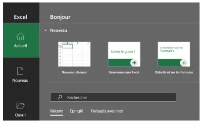
Page 3
Limitation d’un classeur
- Les limitations d’un classeur sont liées :
- À l’ordinateur
- Au système d’exploitation
- Limitation d’un classeur :
- Nombre de feuilles : 255
- Les limitations d’une feuille sont :
- Nombre de feuilles : 255
- Nombre de lignes maximum : 10 148 576
- Nombre de colonnes maximum : 16 384
- Nom des cellules va de A1 à XFD10148576
- Nom d’une feuille : 31 caractères maximum
- Nombre de caractères dans une cellule
- Texte : 32767 caractères
- Formule : 8192 caractères
- Chiffre : 11 caractères affichables Si le chiffre est plus long, affichage en écriture exponentielle
Calcul simple dans Excel
| Addition : + | Soustraction : - |
- Calcul simple
- Excel ≈ calculatrice
- Opérateurs
- Classique
| • + | Multiplication : * | Division : / |
- -
- *
- /
- Ordre de calcul
- %, ^, * , / -, +
- Pourcentage, exposant, multiplication & division, soustraction & addition
- L’ordre peut être changé avec l’utilisation des parenthèses (calcul prioritaire)

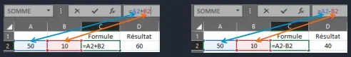

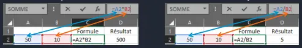
Page 4
Connaissances des notions de base d’Excel
Les cellules
Cellules d’Excel
Référence de la cellule sélectionnée
- Les cellules
- Référencées par une ou plusieurs lettres (colonne) et un nombre (ligne)
- La première cellule : A1
- La dernière cellule : XFD10148576
- Modification des références
- La référence peut-être remplacée par un nom
- La zone « référence » est modifiable
- La liste des noms
- Accessible par le menu « Formules »
- Dans le gestionnaire de noms
| • | Nouveau nom |
| • | Modifier un nom |
| • | Supprimer un nom |

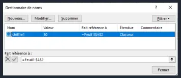
Page 5
Cellules d’Excel
- Les pointeurs
- La croix blanche
- Sélectionner une cellule
- La référence est affichée
- Sélectionner plusieurs cellules
- Le nombre de colonnes et de lignes est affiché
- Éditer le contenu d’une cellule
- Par la barre de formule
- En double cliquant dans une cellule
- Les pointeurs
- La flèche blanche
- Apparaît en se positionnant sur le bord d’une cellule sélectionnée
- Permet de déplacer une cellule (contenu, formule, mise en forme)
- Curseur : flèche blanche + croix fléchée
Déplacement
- Permet de copier une cellule + CTRL (contenu, formule,
Copie
mise en forme)
- Curseur : flèche blanche + petite croix
- La croix noire
- Apparaît en se positionnant sur le petit carré en bas à droite
- Recopier la cellule (contenu, formule, mise en forme)
- Recopier en incrémentant la valeur de contenu si possible

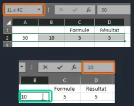
Page 6
Cellules d’Excel
- Les pointeurs
- Incrémentation
- En fonction des listes personnalisées
- Dans les « Options Excel »
- Menu « Options avancées »
| • | En bas du menu |
- Modifier les listes personnalisées
- En sélectionnant deux cellules
Pas de 5
- Définir un pas de recopie
- Aperçu des valeurs lors de la recopie
Aperçu de la valeur
Connaissances des notions de base d’Excel
Les fonctions

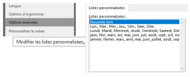
Page 7
Fonctions Excel
- Les fonctions d’Excel
- La liste des fonctions Excel
- Les catégories des fonctions
- Base de données
- Cube
- Date et Heure
- Finances
- Informations
- Ingénierie
- Logique
- Mathématiques et Trigonométrie
- Recherche et Référence
- Statistiques
- Texte
- Web
- Quelques fonctions à connaître
- Fonctions « Mathématiques »
| alea() : Génère en nombre aléatoire entre 0 et 1 | Ex : = alea()*100 | Résultat : variable x 100 | |
| arrondi() : Arrondit un nombre à X chiffre après la virgule | Ex : = arrondi(3,14159;2) | Résultat : 3,14 | |
| • | arrondi.inf() | ||
| • | arronfi.sup() | Ex : = arrondi.inf(3,14159;3) | Résultat : 3,141 |
| Ex : = arrondi.sup(3,14159;3) | Résultat : 3,142 | ||
| ent() : Arrondit un nombre à l’entier inférieur | Ex : = ent(3,14159) | Résultat : 3 | |
| produit() : Multiplie tous les nombres | Ex : = produit(B2:B3;2) | Résultat : (B2 x B3) x 2 |
Equivalent à *
| somme() : Additionne tous les nombres | Ex : = somme(B2:B3) | Résultat : B2 + B3 |
Equivalent à +
| quotient() : Donne la partie entière du résultat d’une | Ex : = quotient(5;2) | Résultat : 5/2 = 2 |
division
| mod() : Renvoie le reste d’une division | Ex : = mod(5;2) | Résultat : 1 |
Page 8
Fonctions Excel
- Quelques fonctions à connaître
- Fonctions « Texte »
| concat() : Assemble des chaînes de caractères | Ex : = concat("Hello";" ";"world") | Résultat : "Hello world" |
Equivalent à « & »
| droite() : Extrait des caractères à partir de la droite | Ex : = droite(Hello;2) | Résultat : "lo" |
| gauche() : Extrait des caractères à partir de la gauche | Ex : = gauche(Hello;4) | Résultat : "Hell" |
| majuscule() : Convertit la chaîne de caractères en majuscule | Ex : = majuscule(Hello) | Résultat : "HELLO" |
| minuscule() : Convertit la chaîne de caractères en minuscule | Ex : = minuscule(Hello) | Résultat : "hello" |
| nbcar() : Renvoie le nombre de caractères d’une chaîne de caractères | Ex : = nbcar("Hello world") | Résultat : 11 |
| texte() : Convertit un nombre en chaîne de caractères | Ex : = texte(17;12) | Résultat : "17,12" |
| cnum() : Convertit une chaîne de caractères chiffre en nombre | Ex : = cnum("17,12") | Résultat : 17,12 |
Fonctions Excel
- Quelques fonctions à connaître
- Fonctions « Recherche »
| colonne() : Renvoie le numéro de colonne | Ex : = colonne(E3) | Résultat : 5 |
| ligne() : Renvoie le numéro de la ligne | Ex : = ligne(E3) | Résultat : 3 |
| recherchev() : Recherche une valeur dans un tableau puis | Ex : = recherchev(3;A2:E5;4) | Résultat : "Rennes" |
retourne une valeur dans une autre colonne sur la même ligne
| rechercheh() : Recherche une valeur dans un tableau puis | Ex : = rechercheh("Ville";A2:E5;3) | Résultat : "Rennes" |
retourne une valeur dans une autre ligne sur la même colonne
| trouve() : Renvoie la position d’une chaîne de caractères | Ex : = trouve("o";C3) | Résultat : 8 |
dans une chaîne de caractères

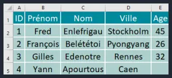
Page 9
- Quelques fonctions à connaître
- Fonctions « Logique »
| si() : Retourne une valeur après avoir vérifié une | Ex : = SI(B5="Yann";Vrai;Faux) | Résultat : "Vrai" |
ou plusieurs conditions
| et() : Permet d’effectuer un test avec plusieurs | Ex : = SI(ET(B4="Gilles";A4>2);"OK";"Anormal") Résultat : "Vrai" | Ex : = ET(A2<A5;A3<3) |
| conditions à vérifier | Résultat : "OK" |
Toutes les conditions doivent être validées
| ou() : Permet d’effectuer un test avec plusieurs | Ex : = OU(B2="François";A3>=2) | Résultat : "Vrai" Résultat : |
| conditions à vérifier. | Ex : = SI(OU(D3="Rennes";E1>50);"au moins une | "au moins une valeur est |
valeur est ok";"Faux")
| Une condition doit être validée | ok" | |
| sierreur() : Permet de gérer les erreurs | Ex : = SIERREUR(moy(E2:E5);"une valeur est | Résultat : "une valeur est NULL" |
| retournées par une fonction | NULL") |
Connaissances des notions de base d’Excel
Utilisation des fonctions

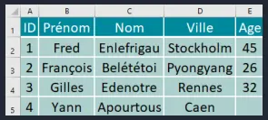
Page 10
Les fonctions
- Trouver la fonction
- Choisir la cellule de destination du résultat
- Taper « = »
- Puis les premières lettres de la fonction
- Excel va vous proposer les fonctions contenant les caractères saisis
- En cliquant sur le nom des fonctions, vous avez un aperçu de la fonction
- Sélectionner la fonction par un double clic
- Une aide simplifiée sur la commande apparaît
| • Cliquer sur | pour obtenir de l’aide détaillée |

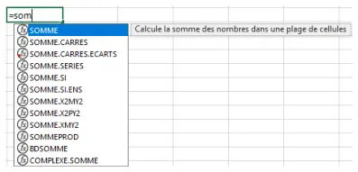

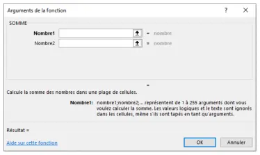
Page 11
Recopie des fonctions
- Recopie de la formule vers d’autres cellules
- En utilisant la croix noire, recopie de toute la structure de la cellule
- Pour recopier seulement la formule, effectuer un copier-coller spécial avec le clic droit de la souris
- Recopie de la formule verticalement
| • Lors de la copie, la référence des cellules évolue | En cellule E2 : =somme(A2:D2) |
| • Copie vers la ligne suivante | En cellule E3 : =somme(A3:D3) |
- Recopie de la formule horizontalement
| • Lors de la copie, la référence des cellules évolue | En cellule A10 : =somme(A2:A9) |
| • Copie vers la ligne suivante | En cellule B10 : =somme(B2:B9) |
Page 12
- Référence relative d’une cellule
| • « nom » normal | cellule A1 |
- Utilisable dans les formules
- Évolue lors de la recopie
- Référence absolue d’une cellule
- Nom contenant des symboles « $ »
cellule $A$1
- Utilisable dans les formules
| • | N’évolue pas lors de la recopie |
| • | Horizontalement |
| • | Verticalement |
- Référence absolue d’une ligne ou d’une colonne
Ligne absolue A$1
- Ligne absolue : $ devant les nombres
- Colonne absolue : $ devant les lettres
| • Utilisable dans les formules | Colonne absolue $A1 |
| • | Ne change pas la ligne ou la colonne |
| • | Horizontalement |
| • | Verticalement |
- Touche « F4 » pour le référencement absolu
Connaissances des notions de base d’Excel
Excel et SharePoint
Page 13
Office et SharePoint
- Documents stockés sur SharePoint
- Sauvegarde automatique
- Gestion automatique des versions des documents
- Possibilité d’ouvrir une version antérieure
- Sans écrasement de la version courante
- Historique des personnes qui ont modifié le document À partir du nom du classeur, cliquer sur la petite flèche
À partir du menu « Fichier »
Connaissances des notions de base d’Excel
TP
Démo
Utilisation d’Excel

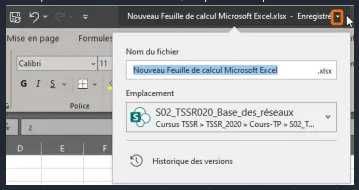
Référence du document : 1iMM4_v_Oj8W9fCRz_eZZfRFRLbyfCWKk · SHA-256 454b907751a8980a…
Énoncé · M3 - Enoncé du TP - Utilisation d'Excel · 4 pages transcrites
Page 1
Utilisation d’Excel
Énoncé
TP du Module 3 - Notions de base sur Excel Avant de démarrer ce TP, il convient d’avoir suivi les vidéos du module ..
Durée estimée 60 à 90 minutes
Objectifs Connaître l’utilisation du tableur Excel (fonctions, graphique, tableau) Prérequis :
| • | Récupérer deux documents : |
o « Clients – Document Brut.docx », document à mettre en forme o « Clients – Document Fini.pdf », document contenant le résultat attendu
Principales tâches à réaliser
- Feuille « Liste des clients » Créer la formule pour générer les « Codes clients » Les « Codes clients » sont composés des colonnes :
Nom Prénom Ville Pays Fonctions utilisées majuscule() gauche() concatener() ou &
Page 2
- Feuille « Catalogue des produits » Créer la formule pour générer les « Code » de l’ouvrage Les « Code » sont composés des colonnes :
Nom-Auteur Prénom-Auteur Collection Tome Fonctions utilisées majuscule() gauche() droite() concatener() ou &
- Feuille « Liste des produits vendus » Créer la formule pour générer les « Numéro de la commande » Les « Numéro de la commande » sont composés des colonnes :
Date de la commande Code clients S’il n’y a pas d’informations dans les colonnes date de commande ou de code clients, la colonne « Numéros de la commande » n’affiche rien. Fonctions utilisées droite() annee() mois() jour() si() ou() concatener() ou &
Page 3
- Feuille « Liste des produits vendus » Créer la formule pour récupérer les « Nom et Prénom » Les « Nom et Prénom » sont composés des colonnes :
« Nom » du tableau « Clients » de la feuille « Liste des clients » « Prénom » du tableau « Clients » de la feuille « Liste des clients » Fonctions utilisées rechercherv() concatener() ou &
- Feuille « Liste des produits vendus » Créer la formule pour récupérer les « Titre et Tome » Les « Titre et Tome » sont composés des colonnes :
« Collection » du tableau « Ouvrage » de la feuille « Catalogue des produits » « Tome » du tableau « Ouvrage » de la feuille « Catalogue des produits » Fonctions utilisées rechercherv() concatener() ou & droite()
- Feuille « Liste des produits vendus » Créer la formule pour récupérer les « Montant TTC » Les « Montant TTC » sont composés des colonnes :
« Prix » du tableau « Ouvrage » de la feuille « Catalogue des produits » Fonction utilisée rechercherv()
- Feuille « Liste des produits vendus » Créer la formule pour calculer les « Total de la commande » Les « Total de la commande » sont calculés à partir de la colonne « Montant TTC »:
« Prix » du tableau « Ouvrage » de la feuille « Catalogue des produits » Dans la colonne « Total de la commande », si le « Code clients » est identique à celui de la ligne du dessous, la cellule est vide, sinon le résultat du calcul s’affiche. Fonctions utilisées si() ou() somme.si.ens()
Page 4
- Feuille « Catalogue des produits » Créer la formule dans la colonne « Ventes » pour compter le nombre d’articles vendus. Le décompte s’effectue à partir des colonnes
« Produits » du tableau « Achats » de la feuille « Liste des produits vendus » « Codes » du tableau « Ouvrage » de la feuille « Catalogue des produits » Fonction utilisée nb.si.ens()
- Feuille « Catalogue des produits » Créer la formule dans la colonne « % des ventes » pour représenter le pourcentage des ventes d’un produit. Le calcul s’effectue à partir de la colonne « Ventes » Fonction utilisée
somme()
- Feuille « Total des ventes par clients » Créer un tableau récapitulatif du montant des achats effectués par chaque client. Tableau croisé dynamique créé à partir du tableau de la feuille « Liste des
produits vendus » « Nom et Prénom » en ligne « Montant TTC » en valeurs sur lesquelles est effectuée une somme.
- Feuille « Total des ventes par clients » Créer un graphique à partir du tableau créé précédemment. Graphique croisé dynamique histogramme groupé 3D
- Feuille « Liste des clients » Créer la formule pour le montant des achats de chaque client dans la colonne « Total Achats ». Les « Total Achats » sont récupérés à partir :
Des valeurs calculées dans le tableau croisé dynamique. Des colonnes « Nom » et « Prénom » du tableau « Clients » de la feuille « Liste des clients » En cas d’erreur retournée par la formule, la cellule ne devra rien contenir. Fonction utilisée recherchev() sierreur()
Référence du document : 1LBnGQASfwJWAa-v07lZ8Hig74kYlcqCq · SHA-256 632e56cdcd27bb78…
Support · Clients - Document Fini · 4 pages transcrites
Page 1
Liste des clients
Le tableau est nommé Clients.
| Code clients | Titre | Nom | Prénom | Adresse1 | CP | Ville | Pays | Total Achats |
|---|---|---|---|---|---|---|---|---|
| BEUODEBRUBEL | Madame | BEUKELAERE | Odette | avenue de la Reine Astrid | 1000 | BRUXELLES | BELGIQUE | 31,00 € |
| BINJULNICFRA | Monsieur | BINOCHE | Julien | 56, place de la Victoire | 06100 | NICE | FRANCE | 39,00 € |
| CAIMICRENFRA | Monsieur | CAINE | Mickaël | 12, rue des Capucins | 35000 | RENNES | FRANCE | 16,50 € |
| CURARTLYOFRA | Monsieur | CURT | Arthur | 12, rue du Commerce | 69100 | LYON | FRANCE | 24,50 € |
| DESSOPRENFRA | Madame | DESVENTS | Sophie | 3, rue des Roches | 35000 | RENNES | FRANCE | 34,50 € |
| DUBJEANANFRA | Monsieur | DUBOIS | Jean | 10, impasse des Marguerites | 44000 | NANTES | FRANCE | 32,50 € |
| HOLSHENANFRA | Monsieur | HOLMES | Sherlock | 16, rue Mauduit | 44100 | NANTES | FRANCE | 57,50 € |
| HOUSÉBMARFRA | Monsieur | HOUDAN | Sébastien | 125, avenue Marceau | 13210 | MARSEILLE | FRANCE | |
| IRVAMYNANFRA | Madame | IRVING | Amy | 17, rue Avenue Shining | 44300 | NANTES | FRANCE | 63,50 € |
| IZGBERLONGRA | Madame | IZGOUD | Bernadette | Spring Road | 675490 | LONDRES | GRANDE-BRETAGNE | 79,00 € |
| LAPMAXNANFRA | Monsieur | LAPORTE | Maxime | 34, rue des Cèdres | 44000 | NANTES | FRANCE | 33,50 € |
| LEVMARANGFRA | Madame | LEVASSEUR | Marthe | 15, rue de la Fauvette | 49000 | ANGERS | FRANCE | 19,00 € |
| PORJULNANFRA | Madame | PORTE | Juliette | 10, rue des Peupliers | 44400 | NANTES | FRANCE | 26,00 € |
| PREJEARENFRA | Madame | PREFFER | Jeanne | 24, rue de l'Evasion | 35000 | RENNES | FRANCE | 19,50 € |
| REGOTAGENSUI | Madame | REGION | Otalie | 10, avenue Fragmeht | 1212 | GENEVE | SUISSE | 42,00 € |
| WALEVANANFRA | Mademoiselle | WALKEN | Eva | 32, rue des Voyants | 44000 | NANTES | FRANCE | 55,00 € |
| 573,00 € |
Page 2
Catalogue des produits
Le tableau est nommé Ouvrage.
| Code | Collection | Nom | Tome | Nom auteur | Prénom auteur | Prix | Ventes | % des ventes |
|---|---|---|---|---|---|---|---|---|
| COLSUZHUNG1 | Hunger Games | Tome 1 | Collins | Suzanne | 17,00 € | 2 | 6% | |
| COLSUZHUNG2 | Hunger Games | L'embrasement | Tome 2 | Collins | Suzanne | 17,00 € | 1 | 3% |
| COLSUZHUNG3 | Hunger Games | La révolte | Tome 3 | Collins | Suzanne | 17,50 € | 0 | 0% |
| DASJAMLABY1 | Labyrinthe | Le labyrinthe | Tome 1 | Dasher | James | 15,50 € | 3 | 9% |
| DASJAMLABY2 | Labyrinthe | La terre Brûlée | Tome 2 | Dasher | James | 16,00 € | 0 | 0% |
| DASJAMLABY3 | Labyrinthe | Le remède mortel | Tome 3 | Dasher | James | 16,50 € | 0 | 0% |
| GIEKERROUG1 | Rouge Rubis | Tome 1 | Gier | Kerstin | 13,50 € | 1 | 3% | |
| GIEKERBLEU2 | Bleu Saphir | Tome 2 | Gier | Kerstin | 13,00 € | 3 | 9% | |
| GIEKERVERT3 | Vert Emeraude | Tome 3 | Gier | Kerstin | 13,00 € | 2 | 6% | |
| MARGEOGAME1 | Games of Throne | Intégrale 1 | Tome 1 | Martin | George R.R. | 19,00 € | 3 | 9% |
| MARGEOGAME2 | Games of Throne | Intégrale 2 | Tome 2 | Martin | George R.R. | 19,50 € | 2 | 6% |
| MARGEOGAME3 | Games of Throne | Intégrale 3 | Tome 3 | Martin | George R.R. | 19,50 € | 3 | 9% |
| MARGEOGAME4 | Games of Throne | Intégrale 4 | Tome 4 | Martin | George R.R. | 21,00 € | 2 | 6% |
| MARGEOGAME5 | Games of Throne | Intégrale 5 | Tome 5 | Martin | George R.R. | 21,00 € | 1 | 3% |
| PAOCHRERAG1 | Eragon | Tome 1 | Paolini | Christopher | 12,00 € | 2 | 6% | |
| PAOCHRERAG2 | Eragon | L'aîné | Tome 2 | Paolini | Christopher | 12,50 € | 1 | 3% |
| PAOCHRERAG3 | Eragon | Brisingr | Tome 3 | Paolini | Christopher | 13,00 € | 0 | 0% |
| PAOCHRERAG4 | Eragon | L'héritage | Tome 4 | Paolini | Christopher | 14,00 € | 0 | 0% |
| ROTVERDIVE1 | Divergente | Tome 1 | Roth | Veronica | 14,50 € | 2 | 6% | |
| ROTVERDIVE2 | Divergente | Tome 2 | Roth | Veronica | 14,50 € | 1 | 3% | |
| ROTVERDIVE3 | Divergente | Tome 3 | Roth | Veronica | 15,00 € | 1 | 3% | |
| ALDJUSMISÉ | Miséricorde | Alder-Olsen | Jussi | 16,50 € | 2 | 6% | ||
| ALDJUSPROF | Profanation | Alder-Olsen | Jussi | 17,00 € | 2 | 6% | ||
| ALDJUSDÉLI | Délivrance | Alder-Olsen | Jussi | 17,50 € | 1 | 3% | ||
| ALDJUSDOSS | Dossier 64 | Alder-Olsen | Jussi | 18,00 € | 0 | 0% | ||
| ALDJUSL'EF | L'effet papillon | Alder-Olsen | Jussi | 19,00 € | 0 | 0% | ||
| ALDJUSPROM | Promesse | Alder-Olsen | Jussi | 20,00 € | 0 | 0% |
Page 3
Liste des produits vendus
Le tableau est nommé Achats.
| Numéro de la commande | Date de la commande | Code clients | Nom et Prénom | Produits | Titre et Tome | Montant TTC | Total de la commande |
|---|---|---|---|---|---|---|---|
| 210107CAIMICRENFRA | 07/01/2021 | CAIMICRENFRA | CAINE Mickaël | ALDJUSMISÉ | Miséricorde | 16,50 | 16,50 |
| 210107DESSOPRENFRA | 07/01/2021 | DESSOPRENFRA | DESVENTS Sophie | ALDJUSPROF | Profanation | 17,00 | |
| 210107DESSOPRENFRA | 07/01/2021 | DESSOPRENFRA | DESVENTS Sophie | ALDJUSDÉLI | Délivrance | 17,50 | 34,50 |
| 210115IZGBERLONGRA | 15/01/2021 | IZGBERLONGRA | IZGOUD Bernadette | MARGEOGAME1 | Games of Throne 1 | 19,00 | |
| 210115IZGBERLONGRA | 15/01/2021 | IZGBERLONGRA | IZGOUD Bernadette | MARGEOGAME2 | Games of Throne 2 | 19,50 | 38,50 |
| 210120WALEVANANFRA | 20/01/2021 | WALEVANANFRA | WALKEN Eva | GIEKERROUG1 | Rouge Rubis 1 | 13,50 | |
| 210120WALEVANANFRA | 20/01/2021 | WALEVANANFRA | WALKEN Eva | GIEKERBLEU2 | Bleu Saphir 2 | 13,00 | |
| 210120WALEVANANFRA | 20/01/2021 | WALEVANANFRA | WALKEN Eva | GIEKERVERT3 | Vert Emeraude 3 | 13,00 | 39,50 |
| 210122LAPMAXNANFRA | 22/01/2021 | LAPMAXNANFRA | LAPORTE Maxime | ALDJUSMISÉ | Miséricorde | 16,50 | |
| 210122LAPMAXNANFRA | 22/01/2021 | LAPMAXNANFRA | LAPORTE Maxime | ALDJUSPROF | Profanation | 17,00 | 33,50 |
| 210125LEVMARANGFRA | 25/01/2021 | LEVMARANGFRA | LEVASSEUR Marthe | MARGEOGAME1 | Games of Throne 1 | 19,00 | 19,00 |
| 210125BINJULNICFRA | 25/01/2021 | BINJULNICFRA | BINOCHE Julien | MARGEOGAME2 | Games of Throne 2 | 19,50 | |
| 210125BINJULNICFRA | 25/01/2021 | BINJULNICFRA | BINOCHE Julien | MARGEOGAME3 | Games of Throne 3 | 19,50 | 39,00 |
| 210130CURARTLYOFRA | 30/01/2021 | CURARTLYOFRA | CURT Arthur | PAOCHRERAG1 | Eragon 1 | 12,00 | |
| 210130CURARTLYOFRA | 30/01/2021 | CURARTLYOFRA | CURT Arthur | PAOCHRERAG2 | Eragon 2 | 12,50 | 24,50 |
| 210201IRVAMYNANFRA | 01/02/2021 | IRVAMYNANFRA | IRVING Amy | COLSUZHUNG1 | Hunger Games 1 | 17,00 | |
| 210201IRVAMYNANFRA | 01/02/2021 | IRVAMYNANFRA | IRVING Amy | COLSUZHUNG2 | Hunger Games 2 | 17,00 | 34,00 |
| 210206DUBJEANANFRA | 06/02/2021 | DUBJEANANFRA | DUBOIS Jean | COLSUZHUNG1 | Hunger Games 1 | 17,00 | |
| 210206DUBJEANANFRA | 06/02/2021 | DUBJEANANFRA | DUBOIS Jean | DASJAMLABY1 | Labyrinthe 1 | 15,50 | 32,50 |
| 210206WALEVANANFRA | 06/02/2021 | WALEVANANFRA | WALKEN Eva | DASJAMLABY1 | Labyrinthe 1 | 15,50 | 15,50 |
| 210206BEUODEBRUBEL | 06/02/2021 | BEUODEBRUBEL | BEUKELAERE Odette | MARGEOGAME1 | Games of Throne 1 | 19,00 | |
| 210206BEUODEBRUBEL | 06/02/2021 | BEUODEBRUBEL | BEUKELAERE Odette | PAOCHRERAG1 | Eragon 1 | 12,00 | 31,00 |
| 210208HOLSHENANFRA | 08/02/2021 | HOLSHENANFRA | HOLMES Sherlock | DASJAMLABY1 | Labyrinthe 1 | 15,50 | |
| 210208HOLSHENANFRA | 08/02/2021 | HOLSHENANFRA | HOLMES Sherlock | GIEKERBLEU2 | Bleu Saphir 2 | 13,00 | |
| 210208HOLSHENANFRA | 08/02/2021 | HOLSHENANFRA | HOLMES Sherlock | ROTVERDIVE1 | Divergente 1 | 14,50 | 43,00 |
| 210210HOLSHENANFRA | 10/02/2021 | HOLSHENANFRA | HOLMES Sherlock | ROTVERDIVE1 | Divergente 1 | 14,50 | 14,50 |
| 210210IRVAMYNANFRA | 10/02/2021 | IRVAMYNANFRA | IRVING Amy | ROTVERDIVE2 | Divergente 2 | 14,50 | |
| 210210IRVAMYNANFRA | 10/02/2021 | IRVAMYNANFRA | IRVING Amy | ROTVERDIVE3 | Divergente 3 | 15,00 | 29,50 |
| 210215IZGBERLONGRA | 15/02/2021 | IZGBERLONGRA | IZGOUD Bernadette | MARGEOGAME3 | Games of Throne 3 | 19,50 | |
| 210215IZGBERLONGRA | 15/02/2021 | IZGBERLONGRA | IZGOUD Bernadette | MARGEOGAME4 | Games of Throne 4 | 21,00 | 40,50 |
| 210215PREJEARENFRA | 15/02/2021 | PREJEARENFRA | PREFFER Jeanne | MARGEOGAME3 | Games of Throne 3 | 19,50 | 19,50 |
| 210215REGOTAGENSUI | 15/02/2021 | REGOTAGENSUI | REGION Otalie | MARGEOGAME4 | Games of Throne 4 | 21,00 | |
| 210215REGOTAGENSUI | 15/02/2021 | REGOTAGENSUI | REGION Otalie | MARGEOGAME5 | Games of Throne 5 | 21,00 | 42,00 |
| 210220PORJULNANFRA | 20/02/2021 | PORJULNANFRA | PORTE Juliette | GIEKERBLEU2 | Bleu Saphir 2 | 13,00 | |
| 210220PORJULNANFRA | 20/02/2021 | PORJULNANFRA | PORTE Juliette | GIEKERVERT3 | Vert Emeraude 3 | 13,00 | 26,00 |
| 573,00 € | 573,00 € |
Page 4
Total des ventes par clients
Feuille 3.
| Nom et Prénom | Somme de Montant TTC |
|---|---|
| BEUKELAERE Odette | 31,00 |
| BINOCHE Julien | 39,00 |
| CURT Arthur | 24,50 |
| DESVENTS Sophie | 34,50 |
| DUBOIS Jean | 32,50 |
| HOLMES Sherlock | 57,50 |
| IRVING Amy | 63,50 |
| IZGOUD Bernadette | 79,00 |
| LAPORTE Maxime | 33,50 |
| PORTE Juliette | 26,00 |
| PREFFER Jeanne | 19,50 |
| REGION Otalie | 42,00 |
| WALKEN Eva | 55,00 |
| CAINE Mickaël | 16,50 |
| LEVASSEUR Marthe | 19,00 |
| Total général | 573,00 |

Référence du document : 12QGYWriIVavMocVlQ6I_tEbRz288mcjC · SHA-256 9a86ba62d2ce7f29…
Correction · M3 - Solution du TP - Utilisation d'Excel · 7 pages transcrites
Correction originale : à consulter après avoir tenté l’exercice.
Page 1
Utilisation d’Excel
Solution
TP du Module 3 - Notions de base sur Excel Avant de démarrer ce TP, il convient d’avoir suivi les vidéos du module ..
Durée estimée 60 à 90 minutes
Code clients
| • | L’ensemble du code client devant être en majuscules, on utilisera en premier lieu la |
fonction MAJUSCULE().
| • | Il faut ensuite isoler les colonnes qui contiennent les informations à concaténer : |
| • | La fonction GAUCHE() permet d’isoler les premiers caractères d’une cellule en en |
spécifiant le nombre après un « ; ». On peut maintenant commencer à dessiner le squelette de notre formule : =MAJUSCULE(GAUCHE(D6;3)&GAUCHE(E6;3)&GAUCHE(H6;3)&GAUCHE(I6;3))
| • | Il ne reste qu’à étirer la formule sur les cases en dessous. |

Page 2
Code ouvrage
| • | Même méthode que pour l’exercice précédent. L’ensemble des données doivent être |
en majuscules en récupérant les 3 ou 4 premiers caractères. Dans le cas de la colonne Tome, il ne faudra récupérer que le dernier caractère. =MAJUSCULE(GAUCHE(F7;3)&GAUCHE(G7;3)&GAUCHE(C7;4)&DROITE(E7;1))
| • | Il ne reste qu’à étirer la formule sur les cases en dessous. |


Page 3
Numéros de commande On peut utiliser les fonctions ANNEE, MOIS et JOUR afin de pouvoir les reconstituer en date inversée.
On peut utiliser la formule simple :
=DROITE(ANNEE(C6);2)&MOIS(C6)&JOUR(C6)&D6
On s’aperçoit que le résultat n’est pas satisfaisant : les mois et jours inférieurs à 10 ne remontent qu’un seul chiffre. Il faudra donc utiliser des conditions pour tester la valeur et éventuellement ajouter un 0 pour les chiffres inférieurs ou égaux à 9. =DROITE(ANNEE(C6);2)&SI(MOIS(C6)>9;MOIS(C6);"0"&MOIS(C6))&SI(JOUR(C6)>9;JOUR(C6);"0"&JOUR(C6))&D6
| • | En cas de case vide, une erreur se produira. Il est possible de « fermer » la formule en |
ajoutant un test de case vide : =SI(OU(C8="";D8="");"";DROITE(ANNEE(C8);2)&SI(MOIS(C8)>9;MOIS(C8);"0"&MOIS(C8))&SI(J
OUR(C8)>9;JOUR(C8);"0"&JOUR(C8))&D8)
| • | Il ne reste qu’à étirer la formule sur les cases en dessous. |

Page 4
Noms et prénoms
| • | Sur la feuille Liste des clients, il faut identifier le tableau Clients en cliquant sur le menu |
suivant :
| • | Nous pouvons maintenant faire référence à ce tableau dans la fonction recherchev() |
| • | D6 symbolise la valeur de la recherche (code client), à comparer avec notre tableau |
Clients en récupérant la 3ème colonne du tableau (nom) puis la 4ème (prénom).
| • | Il faudra ajouter un espace symbolisé par &" "& qui permettent de concaténer les |
champs nom et prénom avec un espace entre eux. =RECHERCHEV(D6;Clients;3;FAUX)&" "&RECHERCHEV(D6;Clients;4;FAUX) Titre et Tome
| • | Même procédé que pour la question précédente : |
| • | Dans la feuille Liste des produits vendus, on va rechercher dans la colonne F6, à |
comparer avec la 2e colonne du tableau Ouvrage, ajouter un espace, et englober dans la fonction DROITE(), qui ne récupérera que le dernier caractère, une recherche toujours basée sur le code produit mais cette fois sur la 4ème colonne du tableau Ouvrage.
=RECHERCHEV('Liste des produits vendus '!F6;Ouvrage;2;FAUX)&" "&DROITE(RECHERCHEV('Liste des produits vendus '!F6;Ouvrage;4;FAUX);1)
Montant TTC
| • | Il faut effectuer une recherchev() basée sur le code produit au sein de la 7ème colonne |
du tableau Ouvrage.
=RECHERCHEV(F6;Ouvrage;7;FAUX)

Page 5
On peut ajouter un SIERREUR() avec comme valeur "" afin d’éviter des erreurs de fonction.
=SIERREUR(RECHERCHEV(F6;Ouvrage;7;FAUX);"")
Total de la commande
| • | Il faut dans un premier temps vérifier que la cellule supérieure est identique, ou si la |
cellule montante est vide.
| • | Si ce test est validé, le contenu de la cellule Montant de la commande devrait être vide. |
| • | On va ensuite additionner les montants en fonction du nombre d’occurrences trouvées |
du numéro de commande grâce à la fonction SOMME.SI.ENS
=SI(OU(B7=B8;H7="");"";SOMME.SI.ENS(Montant;Commande;B7))
Nombre d’articles vendus
| • | En faisant référence à la feuille Liste de produits vendus, il faut compter le nombre |
d’occurrences dans le tableau des différentes références produit.
| • | La fonction NB.SI.ENS permet d’effectuer ces actions et de les reporter en les comparant |
au code produit de la colonne B.
=NB.SI.ENS(produits;B7)
Pourcentage des ventes
| • | Il suffit de diviser le nombre de ventes de chaque ouvrage par le total des ventes : |
=I7/SOMME($I$7:$I$33)
Achats par client
| • | Sur la feuille Total des ventes par clients, créer un tableau croisé dynamique : |
Indiquez Vendus


Page 6
Cliquez sur Nombre de Montant puis modifiez les paramètres des champs Graphique dynamique croisé
| • | Cliquez sur votre tableau croisé dynamique et allez dans Insertion - Graphique croisé |
dynamique.

Page 7
| • | Sélectionnez l’histogramme groupé 3D. |
Total achats par client
| • | En basant la recherche sur la concaténation des Noms et prénoms de la feuille Liste des |
Clients, il faut comparer cela aux résultats de notre tableau croisé dynamique pour reporter les valeurs dans la colonne J de la liste des clients. =SIERREUR((RECHERCHEV(D6&" "&E6;'Total des ventes par clients'!$B$3:$C$19;2;FAUX));"")


Référence du document : 1p8MSdBOHgRnxz8hqdreos-Lzm6ZZSilu · SHA-256 ac619d926498a7c2…
Complément IA / externe au cours — fiche pédagogique du portail
Cette fiche contient une reformulation et des aides d’apprentissage rédigées par IA. Elle est distincte de la transcription des documents du Drive et ne la remplace pas. Les schémas de synthèse de cette fiche sont des illustrations IA / externes au cours, sauf les captures explicitement attribuées à un document source.
Séquence : Microsoft 365 — Outils collaboratifs
Rôle dans le parcours : manipuler un classeur, ses fonctions et son lien avec SharePoint, puis réaliser le TP Clients.
Objectifs¶
- Découvrir les fonctionnalités de Microsoft Excel.
- Mettre en forme un tableau.
- Utiliser des fonctions de calcul.
- Mettre en avant la liaison avec SharePoint.
1. Classeur¶
On crée un classeur neuf ou à partir d’un modèle. On ouvre un classeur récent, ou on le recherche dans l’ordinateur ou sur le réseau.
Limites indiquées par le support¶
Les limites d’un classeur sont liées à l’ordinateur et au système d’exploitation.
| Élément | Valeur du support |
|---|---|
| Nombre de feuilles d’un classeur | 255 |
| Nombre de feuilles (rappel dans les limites d’une feuille) | 255 |
| Lignes maximum | 10 148 576 |
| Colonnes maximum | 16 384 |
| Plage des noms de cellules | A1 à XFD10148576 |
| Nom d’une feuille | 31 caractères maximum |
| Texte dans une cellule | 32 767 caractères |
| Formule | 8 192 caractères |
| Chiffre affichable | 11 caractères, puis écriture exponentielle |
Complément externe au cours
La documentation actuelle d’Excel indique 1 048 576 lignes et une dernière cellule XFD1048576. Ce module retient les valeurs écrites dans le support : 10 148 576 et XFD10148576.
2. Calcul simple¶
Excel est présenté comme une calculatrice. Opérateurs classiques : +, -, *, /. Ordre annoncé : %, ^, *, /, -, + (pourcentage, exposant, multiplication et division, soustraction et addition). Les parenthèses rendent un calcul prioritaire.
3. Cellules, noms et pointeurs¶
Une cellule est référencée par une ou plusieurs lettres de colonne et un nombre de ligne. La première est A1, la dernière XFD10148576. La zone de référence est modifiable : un nom peut remplacer la référence. La liste des noms est dans le menu Formules, gestionnaire de noms : nouveau nom, modifier, supprimer.
| Pointeur | Où il apparaît | Effet |
|---|---|---|
| Croix blanche | Sur une cellule | Sélectionne. La référence s’affiche. Plusieurs cellules : le nombre de colonnes et de lignes s’affiche. |
| Édition | Barre de formule, ou double-clic | Modifie le contenu. |
| Flèche blanche | Bord d’une cellule sélectionnée | Déplace contenu, formule et mise en forme. Le curseur montre la flèche et une croix fléchée. |
| Flèche blanche et petite croix, avec Ctrl | Même bord | Copie contenu, formule et mise en forme. |
| Croix noire | Petit carré en bas à droite | Recopie contenu, formule et mise en forme, en incrémentant la valeur si c’est possible. |
L’incrémentation suit les listes personnalisées : Options Excel, Options avancées, en bas du menu. En sélectionnant deux cellules, on définit un pas de recopie (le support illustre un pas de 5) et un aperçu des valeurs.
4. Fonctions à connaître¶
Catégories listées : Base de données, Cube, Date et Heure, Finances, Informations, Ingénierie, Logique, Mathématiques et Trigonométrie, Recherche et Référence, Statistiques, Texte, Web.
Les noms ci-dessous sont ceux du support, en français et en minuscules.
Mathématiques¶
| Fonction | Rôle | Exemple du support | Résultat annoncé |
|---|---|---|---|
alea() |
Nombre aléatoire entre 0 et 1 | =alea()*100 |
variable × 100 |
arrondi() |
Arrondit à X chiffres après la virgule | =arrondi(3,14159;2) |
3,14 |
arrondi.inf() |
Arrondi vers le bas | =arrondi.inf(3,14159;3) |
3,141 |
arronfi.sup() |
Libellé du support à côté de l’exemple =arrondi.sup(3,14159;3) |
cet exemple | 3,142 |
ent() |
Entier inférieur | =ent(3,14159) |
3 |
produit() |
Multiplie les nombres, équivalent de * |
=produit(B2:B3;2) |
(B2 × B3) × 2 |
somme() |
Additionne, équivalent de + |
=somme(B2:B3) |
B2 + B3 |
quotient() |
Partie entière d’une division | =quotient(5;2) |
2 |
mod() |
Reste d’une division | =mod(5;2) |
1 |
Attention
Le support écrit le libellé arronfi.sup() et, sur la ligne d’exemple, =arrondi.sup(3,14159;3). Les deux graphies sont dans la diapositive. L’exemple à retenir pour le résultat 3,142 est arrondi.sup.
Texte¶
| Fonction | Exemple | Résultat |
|---|---|---|
concat(), équivalent de & |
=concat("Hello";" ";"world") |
Hello world |
droite() |
=droite(Hello;2) |
lo |
gauche() |
=gauche(Hello;4) |
Hell |
majuscule() |
=majuscule(Hello) |
HELLO |
minuscule() |
=minuscule(Hello) |
hello |
nbcar() |
=nbcar("Hello world") |
11 |
texte() |
=texte(17;12) |
17,12 |
cnum() |
=cnum("17,12") |
17,12 |
Recherche¶
| Fonction | Exemple | Résultat |
|---|---|---|
colonne() |
=colonne(E3) |
5 |
ligne() |
=ligne(E3) |
3 |
recherchev() |
=recherchev(3;A2:E5;4) |
Rennes |
rechercheh() |
=rechercheh("Ville";A2:E5;3) |
Rennes |
trouve() |
=trouve("o";C3) |
8 |
Logique¶
| Fonction | Règle | Exemple | Résultat annoncé |
|---|---|---|---|
si() |
Valeur selon une ou plusieurs conditions | =SI(B5="Yann";Vrai;Faux) |
Vrai |
et() |
Toutes les conditions doivent être validées | =SI(ET(B4="Gilles";A4>2);"OK";"Anormal") et =ET(A2<A5;A3<3) |
OK, puis Vrai |
ou() |
Une condition doit être validée | =OU(B2="François";A3>=2) et =SI(OU(D3="Rennes";E1>50);"au moins une valeur est ok";"Faux") |
Vrai, puis « au moins une valeur est ok » |
sierreur() |
Gère l’erreur renvoyée par une fonction | =SIERREUR(moy(E2:E5);"une valeur est NULL") |
une valeur est NULL |
Saisir et recopier¶
- Choisir la cellule du résultat.
- Taper
=, puis les premières lettres : Excel propose les fonctions qui les contiennent. - Un clic sur le nom donne un aperçu. Un double-clic sélectionne la fonction. Une aide simplifiée apparaît ; un clic sur l’aide ouvre le détail.
La croix noire recopie toute la structure. Pour ne recopier que la formule : copier-coller spécial, clic droit.
| Sens | Avant | Après |
|---|---|---|
| Vers la ligne suivante | En E2 : =somme(A2:D2) |
En E3 : =somme(A3:D3) |
| Vers la colonne suivante | En A10 : =somme(A2:A9) |
En B10 : =somme(B2:B9) |
| Référence | Écriture | Comportement à la recopie |
|---|---|---|
| Relative | A1 | Évolue. |
| Absolue | $A$1 | N’évolue ni horizontalement ni verticalement. |
| Ligne absolue | A$1 | Le numéro de ligne ne change pas. Le $ est devant le nombre. |
| Colonne absolue | $A1 | La lettre ne change pas. Le $ est devant la lettre. |
La touche F4 passe au référencement absolu.
5. Excel et SharePoint¶
Pour un document stocké sur SharePoint, le support décrit la sauvegarde automatique, la gestion automatique des versions, l’ouverture d’une version antérieure sans écraser la version courante, et l’historique des personnes qui ont modifié le document. On y accède par la petite flèche à côté du nom du classeur, ou par le menu Fichier.
6. TP — Utilisation d’Excel¶
Durée : 60 à 90 minutes. Avoir suivi les vidéos du module.
Objectif : fonctions, graphique et tableau.
Prérequis : récupérer « Clients – Document Brut.docx » et « Clients – Document Fini.pdf », le résultat attendu.
Le classeur fini nomme trois tableaux : Clients, Ouvrage et Achats. La feuille 3 s’intitule « Total des ventes par clients ». HOUDAN Sébastien n’a pas de total achats affiché ; le total général des autres clients est 573,00 €.
Pas-à-pas de l’énoncé¶
- Liste des clients — Codes clients. Composer le code avec Nom, Prénom, Ville et Pays, en
majuscule(),gauche()etconcatener()ou&. - Catalogue des produits — Code ouvrage. Nom-Auteur, Prénom-Auteur, Collection et Tome, avec
majuscule(),gauche(),droite()et&. - Liste des produits vendus — Numéro de la commande. Date de la commande et Code clients. Si l’une des deux colonnes est vide, n’afficher rien. Fonctions :
droite(),annee(),mois(),jour(),si(),ou(),&. - Nom et Prénom. Colonnes Nom et Prénom du tableau Clients, via
recherchev()et&. - Titre et Tome. Collection et Tome du tableau Ouvrage, via
recherchev(),&etdroite(). - Montant TTC. Prix du tableau Ouvrage, via
recherchev(). - Total de la commande. Si le code client est identique à celui de la ligne du dessous, laisser vide, sinon calculer. Fonctions :
si(),ou(),somme.si.ens(). - Ventes. Compter les articles à partir de Produits (Achats) et des codes Ouvrage, avec
nb.si.ens(). - % des ventes. À partir de la colonne Ventes, avec
somme(). - Total des ventes par clients. Tableau croisé dynamique depuis Liste des produits vendus : Nom et Prénom en ligne, somme de Montant TTC en valeurs. Puis un graphique croisé dynamique, histogramme groupé 3D.
- Total Achats sur Liste des clients, depuis le tableau croisé, par Nom et Prénom. En cas d’erreur, la cellule reste vide :
recherchev()etsierreur().
Correction : formules du support¶
Code client, puis étirer vers le bas :
Code ouvrage (3 ou 4 premiers caractères, et le dernier caractère du tome) :
Numéro de commande. La formule simple =DROITE(ANNEE(C6);2)&MOIS(C6)&JOUR(C6)&D6 n’ajoute pas le zéro des mois et jours inférieurs à 10. La correction ajoute les tests, puis le cas des cellules vides :
=SI(OU(C8="";D8="");"";DROITE(ANNEE(C8);2)&SI(MOIS(C8)>9;MOIS(C8);"0"&MOIS(C8))&SI(JOUR(C8)>9;JOUR(C8);"0"&JOUR(C8))&D8)
Nommer le tableau Clients depuis le menu indiqué par la correction, puis :
Titre et tome. Le nom de feuille conserve l’espace final écrit dans la correction :
=RECHERCHEV('Liste des produits vendus '!F6;Ouvrage;2;FAUX)&" "&DROITE(RECHERCHEV('Liste des produits vendus '!F6;Ouvrage;4;FAUX);1)
Montant TTC, puis la même recherche protégée :
Total de commande : si la cellule du dessous a le même code, ou si le montant est vide, ne rien afficher. Sinon SOMME.SI.ENS sur le numéro de commande :
Ventes et pourcentage (référence absolue sur la colonne des ventes) :
Tableau croisé : indiquer le champ demandé (la correction dit « Indiquez Vendus »), puis Nombre de Montant et les paramètres de champ. Insertion, Graphique croisé dynamique, histogramme groupé 3D.
Total achats, recherche sur la concaténation Nom et Prénom, comparée au tableau croisé, colonne J :
Capture du support — histogramme du classeur fini.
Résumé¶
Un classeur se limite par les valeurs du support. Les pointeurs distinguent sélection, déplacement, copie et recopie incrémentée. Les fonctions du module couvrent le calcul, le texte, la recherche et la logique. F4 fige une référence. SharePoint ajoute versions et historique. Le TP Clients enchaîne codes, recherches, totaux conditionnels, tableau croisé et graphique.
Mini-quiz¶
- Quelle est la dernière cellule citée par le support ?
- Que fait la croix noire de plus que la copie avec Ctrl ?
- Pourquoi la formule simple du numéro de commande est-elle insuffisante pour le mois de janvier ?
- Que signifie
$A$1à la recopie ? - Quelle fonction empêche d’afficher une erreur de
RECHERCHEVdans Total Achats ?
Réponses du mini-quiz
- XFD10148576. Le support indique aussi 10 148 576 lignes et 16 384 colonnes.
- Elle recopie en incrémentant la valeur quand c’est possible, selon les listes personnalisées ou le pas défini.
MOISetJOURrenvoient un seul chiffre sous 10. La correction préfixe un 0 avecSI.- La colonne et la ligne restent fixes.
SIERREUR, avec une chaîne vide comme valeur de remplacement.
M03 — Connaissances des notions de base d’Excel
20 questions
Teste tes connaissances sur ce module.